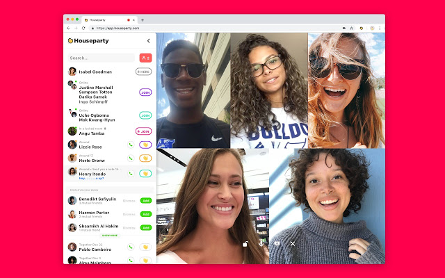
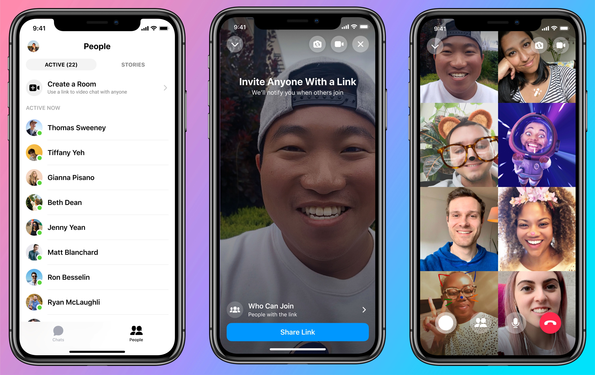

Aenean ornare velit lacus, ac varius enim lorem ullamcorper dolore aliquam.
As our task is to build a social video calling platform, we have conducted research on existing similiar applications and what technologies we believe are needed for our purposes. We have had discussions with the client to determine what similiar applications and technologies we should investigate.
Houseparty is a free video social networking app that allows you to video chat with up to 8 friends in “rooms” and play games together. Its popularity has exploded during the covid-19 crisis.
Facebook Messenger Rooms is a videconferencing feature of facebook messenger. Its purpose is to make it easy to spend quality time with friends, loved ones and people with similiar interests (ref fb website).
Next.js is a framework built on top of React that will empower us to create an even more performant and reactive application while reducing the complexity of the code. Some of the most important features of Next.js include automatic bundling using webpack, code-splitting, page-based routing, server-side rendering, API routes and scalability.
Performance
Performance is one of the most important factors for our choice. React requires difficult techniques for optimization. Next.js simplifies this process
Automatic code-splitting is a Next.js feature that dramatically improves loading times of pages by dynamically loading JavaScript code that is packaged into bundles. With Next.js’s file system based routing we are free to scale our application while affecting the load times of our pages. When a specific route is requested by the client, Next.js will load that specific JavaScript bundle that corresponds to the requested route, thus not overloading the client with unused code. These bundles are automatically created by Next.js using webpack which includes optimization features by determining which code is shared across certain components.
One other feature that improves the loading time of the application is dynamic import. Certain libraries may be needed only when a certain action is done by the user, therefore Next.js supports dynamic import which can load JavaScript code when the user triggers certain actions, such as the click of a button.
Pre-rendering is what makes a difference when using Next.js with React. By default, Next.js pre-renders every page. This means that Next.js generates HTML for each page in advance, instead of having it all done by client-side JavaScript. Pre-rendering can result in better performance and SEO.
Each generated HTML is associated with minimal JavaScript code necessary for that page. When a page is loaded by the browser, its JavaScript code runs and makes the page fully interactive. Next.js has two forms of pre-rendering: Static Generation and Server-side Rendering . The difference is in when it generates the HTML for a page: Static Generation generates HTML build time reusing it for each request, while the other generates HTML on each request.
Another important aspect of this framework is the caching mechanism for remote fetches. Vercel, the creator of Next.js provides a very lightweight library, named SWR, that improves the fetching mechanism in React. The name “SWR” is derived from stale-while-revalidate, a HTTP cache invalidation strategy popularized by HTTP RFC 5861. SWR is a strategy to first return the data from cache (stale), then send the fetch request (revalidate), and finally come with the up-to-date data. In the context of our application, SWR server a very important role in caching data …
Deployment
Since our base code has already been designed to function well with the Vercel deployment system (as recommended by Next.js on their website), Next.js makes a great choice.
The process is very easy requiring only the repository of the Next.js app and the configuration data to be copied to Vercel. This will facilitate our production testing iterations by reducing the time taken to redeploy and reconfigure our Next.js applciation for production. Easy to deploy using Vercel, the creator of Next.js. But gives the option of deploying on every server that has Node.js.
A key part of the project is altering Jitsi’s UI, for which we needed to choose a JavaScript framework or library. The two most widely used libraries/frameworks in this field are React, which is an open-source library, and Angular, which is a framework. For this project, we have decided to keep using React.
Advantages of React
The main advantage of React is that it’s smaller than Angular and easier to get used to if the programmer has prior knowledge of JavaScript. Using React will make achieving the requirements of the project more realistic due to its ease of use, all while providing the tools necessary to complete the project due to its compatibility with third party modules. The disadvantage of having to import modules, however, is that our team has to make sure that these stay consistent throughout the code. On the other hand, React also has a virtual DOM (Document Object Model) implementation, which limits the frequency of updates to the actual DOM, making it faster and more suitable for a video calling app.
Angular is a framework, so any necessary features will likely already be within it, and not needing to import modules would make using it more consistent. However, it is much larger, and typically written in TypeScript, a language that builds on JavaScript. This means that it would be significantly more difficult to learn and would take longer to get started with.
React is owned by Facebook, while Angular is owned by Google, both of which are known for shutting down projects for various reasons, e.g. profitability. From a stability perspective, both are equally likely to lose support from their company.
Overall, React is the more realistic option, mainly due to its accessibility and use of plain JavaScript over TypeScript.
Aenean ornare velit lacus, ac varius enim lorem ullamcorper dolore aliquam.

Aenean ornare velit lacus, ac varius enim lorem ullamcorper dolore aliquam.

Aenean ornare velit lacus, ac varius enim lorem ullamcorper dolore aliquam.
Sed varius enim lorem ullamcorper dolore aliquam aenean ornare velit lacus, ac varius enim lorem ullamcorper dolore. Proin sed aliquam facilisis ante interdum. Sed nulla amet lorem feugiat tempus aliquam.